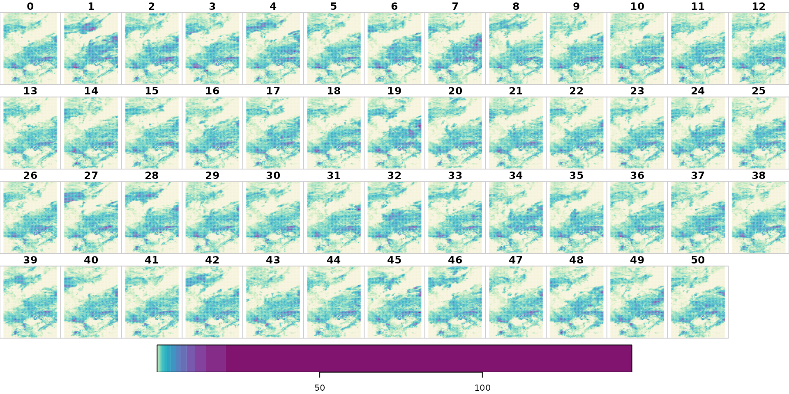
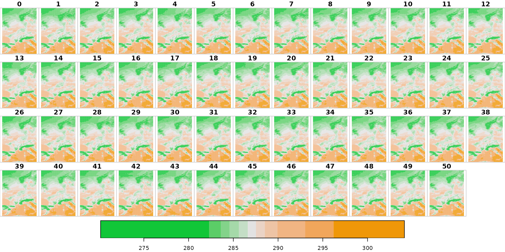

Additional/experimental functionality
Source:vignettes/gridded_additional_functionality.Rmd
gridded_additional_functionality.RmdThis article shows additional eupp functionality for handling gridded data. This must seen as ‘experimental’ as it not always delivers the data as one might expect.
This is mainly related to the fact that everything included in this article is based on files in the NetCDF format using grib_to_netcdf (ecCodes) to convert the GRIB version 1 files to NetCDF and then processed the data using stars.
The problem is that the NetCDF standard does not support all the required dimensions (e.g., initial time + step; levels; ensemble members). which can cause issues when:
- Initialization dates and steps overlap (non-unique times)
- Dimensions are no longer required (e.g., downloading ensemble member 10 only: the demension, and thus the information, will be lost).
Thus, this should not be used in production. Functionality may change in the future if someone has a great idea about a general workaround for all these issues.
Else it is suggested to only download grib data and then use custom software/the software of your choice to properly process everythign.
Setting up
In this article functionality is shown which require an eupp configuration object and an sf object with points of interest. Thus, these are set up first:
library("eupp")
# Create custom configuration
conf <- eupp_config(product = "forecast",
level = "surf",
type = "ens",
date = "2017-07-01",
parameter = c("cp", "2t"),
steps = c(24L, 240L), # +1 and +10 days ahead
cache = "_cache") # optional; caching grib index
# Points of interest
library("sf")
locations <- data.frame(name = c("Innsbruck", "Brussels"),
lon = c(11.39, 4.35),
lat = c(47.27, 50.85))
(locations <- st_as_sf(locations, coords = c("lon", "lat"), crs = 4326))## Simple feature collection with 2 features and 1 field
## Geometry type: POINT
## Dimension: XY
## Bounding box: xmin: 4.35 ymin: 47.27 xmax: 11.39 ymax: 50.85
## Geodetic CRS: WGS 84
## name geometry
## 1 Innsbruck POINT (11.39 47.27)
## 2 Brussels POINT (4.35 50.85)Getting data: NetCDF format
The function eupp_download_gridded() allows to specify the output_format = "nc" to store the data in the NetCDF file format. The procedure is, in large parts, similar to retrieving the data in GRIB format (see getting started). The function first downloads and stores the data in a temporary GRIB file before calling grib_to_netcdf; a console tool provided by ECMWFs ecCodes.
There seem to be ways to use ecCodes under Windows, see here or here.
grib_to_netcdf is called with option -k 3 resulting in a file with the ‘netCDF-4 file format’. Can be changed by adjusting the argument netcdf_kind (default 3, see grib_to_netcdf documentation). Note that the conversion from GRIB to NetCDF adjusts the variable names if needed (e.g., 2t gets t2m).
eupp_download_gridded(conf, output_file = "_test.nc", output_format = "nc", overwrite = TRUE)These files can later be processed with the packages/software of your choice (e.g., via ncdf4, stars, CDS, …). Some examples how to proceed from here …
Reading data using ncdf4
## File _test.nc (NC_FORMAT_NETCDF4):
##
## 2 variables (excluding dimension variables):
## short t2m[longitude,latitude,number,time] (Contiguous storage)
## scale_factor: 0.000518137093143912
## add_offset: 287.143783900203
## _FillValue: -32767
## missing_value: -32767
## units: K
## long_name: 2 metre temperature
## short cp[longitude,latitude,number,time] (Contiguous storage)
## scale_factor: 2.22747631828859e-06
## add_offset: 0.072985489045044
## _FillValue: -32767
## missing_value: -32767
## units: m
## long_name: Convective precipitation
## standard_name: lwe_thickness_of_convective_precipitation_amount
##
## 4 dimensions:
## longitude Size:93
## units: degrees_east
## long_name: longitude
## latitude Size:125
## units: degrees_north
## long_name: latitude
## number Size:51
## long_name: ensemble_member
## time Size:2
## units: hours since 1900-01-01 00:00:00.0
## long_name: time
## calendar: gregorian
##
## 2 global attributes:
## Conventions: CF-1.6
## history: 2022-03-21 14:35:33 GMT by grib_to_netcdf-2.16.0: /usr/bin/grib_to_netcdf /tmp/Rtmp7VoIip/file60b1c3cefec08.grb -k 3 -o _test.ncReading data using stars
library("stars")
x <- read_stars("_test.nc")
print(x)## stars object with 4 dimensions and 2 attributes
## attribute(s), summary of first 1e+05 cells:
## Min. 1st Qu. Median Mean 3rd Qu.
## t2m [K] 272.6738 2.841360e+02 2.867573e+02 2.873175e+02 289.15674651
## cp [m] 0.0000 6.682429e-06 2.494773e-04 9.360189e-04 0.00114715
## Max.
## t2m [K] 299.93399804
## cp [m] 0.02967444
## dimension(s):
## from to offset delta refsys point values x/y
## x 1 93 -6.125 0.25 NA NA NULL [x]
## y 1 125 67.125 -0.25 NA NA NULL [y]
## number 1 51 0 1 NA NA NULL
## time 1 2 2017-07-02 UTC 9 days POSIXct NA NULL
dim(x)## x y number time
## 93 125 51 2
names(x)## [1] "t2m" "cp"
st_get_dimension_values(x, "time") # date/time when valid## [1] "2017-07-02 UTC" "2017-07-11 UTC"
# Plotting 2m dry air temperature
plot(x["t2m"],
main = "t2m",
col = hcl.colors(21, "Blue-Red 2", rev = TRUE),
breaks = seq(min(x$t2m, na.rm = TRUE), max(x$t2m, na.rm = TRUE), length = 22))
# Plotting convective precipitation (mm)
bk <- unique(quantile(x[["cp"]], p = seq(0, 1, by = 0.05)))
plot(x["cp"] * 1e3,
main = "cp",
col = hcl.colors(length(bk) - 1, "Purple-Yellow", rev = TRUE),
breaks = bk * 1e3)
An alternative way to visualize the data using ggplot2, colorspace and sf as well as rnaturalearth for outlines: ```
library("sf")
library("ggplot2")
library("colorspace")
library("rnaturalearth")
ne <- ne_countries(continent = "europe", returnclass = "sf")
st_crs(x) <- st_crs(ne)
# Plotting convective precipitation; member number 10.
# x["cp",,,number_idx,] is subsetting the stars object.
number_idx <- which(st_get_dimension_values(x, "number") == 10)
ggplot() + geom_stars(data = x["cp",,,number_idx,] * 1e3) +
facet_wrap("time") +
scale_fill_continuous_sequential("Purple-Yellow") +
geom_sf(data = ne, fill = "transparent") +
coord_sf(xlim = c(-6, 17), ylim = c(36, 67), expand = FALSE)
# CRS ESRI:102014: Europe_Lambert_Conformal_Conic projection
# Hardcoded x/y-limits added; limit to southern Europe.
tmp <- st_transform(x, crs = st_crs("ESRI:102014"))
ggplot() + geom_stars(data = tmp["t2m",,,1,2]) +
scale_fill_continuous_sequential("Red-Yellow") +
geom_sf(data = ne, fill = "transparent") +
coord_sf(xlim = c(-1.2e6, 6e5), ylim = c(7e5, 2e6), expand = TRUE)
Getting data: stars
As an alternative the package allows to directly retrieve the data as a stars object. Under the hood eupp will download the gridded data set, converts it into a NetCDF file before calling read_stars(). Thus, ecCodes will be required as well and the variable names may differ from the original GRIB short name.
An example using the existing configuration conf:
xst <- eupp_get_gridded(conf)## Warning in CPL_read_gdal(as.character(x), as.character(options),
## as.character(driver), : GDAL Message 1: The dataset has several variables
## that could be identified as vector fields, but not all share the same primary
## dimension. Consequently they will be ignored.
## Warning in CPL_read_gdal(as.character(x), as.character(options),
## as.character(driver), : GDAL Message 1: The dataset has several variables
## that could be identified as vector fields, but not all share the same primary
## dimension. Consequently they will be ignored.## Warning in CPL_read_gdal(as.character(x), as.character(options),
## as.character(driver), : GDAL Message 1: dimension #1 (number) is not a Time
## dimension.## Warning in CPL_read_gdal(as.character(x), as.character(options),
## as.character(driver), : GDAL Message 1: The dataset has several variables
## that could be identified as vector fields, but not all share the same primary
## dimension. Consequently they will be ignored.## Warning in CPL_read_gdal(as.character(x), as.character(options),
## as.character(driver), : GDAL Message 1: dimension #1 (number) is not a Time
## dimension.## Warning in CPL_read_gdal(as.character(x), as.character(options),
## as.character(driver), : GDAL Message 1: The dataset has several variables
## that could be identified as vector fields, but not all share the same primary
## dimension. Consequently they will be ignored.
## Warning in CPL_read_gdal(as.character(x), as.character(options),
## as.character(driver), : GDAL Message 1: The dataset has several variables
## that could be identified as vector fields, but not all share the same primary
## dimension. Consequently they will be ignored.## Warning in CPL_read_gdal(as.character(x), as.character(options),
## as.character(driver), : GDAL Message 1: dimension #1 (number) is not a Time
## dimension.## Warning in CPL_read_gdal(as.character(x), as.character(options),
## as.character(driver), : GDAL Message 1: The dataset has several variables
## that could be identified as vector fields, but not all share the same primary
## dimension. Consequently they will be ignored.## Warning in CPL_read_gdal(as.character(x), as.character(options),
## as.character(driver), : GDAL Message 1: dimension #1 (number) is not a Time
## dimension.## Warning in file.remove(tmp_file, showWarnings = FALSE): cannot remove file
## 'FALSE', reason 'No such file or directory'
class(xst)## [1] "eupp_stars" "stars"
names(xst)## [1] "t2m" "cp"
print(xst)## stars object with 4 dimensions and 2 attributes
## attribute(s), summary of first 1e+05 cells:
## Min. 1st Qu. Median Mean 3rd Qu.
## t2m [K] 272.6738 2.841360e+02 2.867573e+02 2.873175e+02 289.15674651
## cp [m] 0.0000 6.682429e-06 2.494773e-04 9.360189e-04 0.00114715
## Max.
## t2m [K] 299.93399804
## cp [m] 0.02967444
## dimension(s):
## from to offset delta refsys point values x/y
## x 1 93 -6.125 0.25 NA NA NULL [x]
## y 1 125 67.125 -0.25 NA NA NULL [y]
## number 1 51 0 1 NA NA NULL
## time 1 2 2017-07-02 UTC 9 days POSIXct NA NULL
plot(xst["t2m"], col = hcl.colors(11, "Green-Orange"))
To be precise, the object returned is of class c("eupp_stars", "stars") which is a pure stars object; the eupp_stars extension adds some additional functionality for data handling (see methods(class = "eupp_stars")).